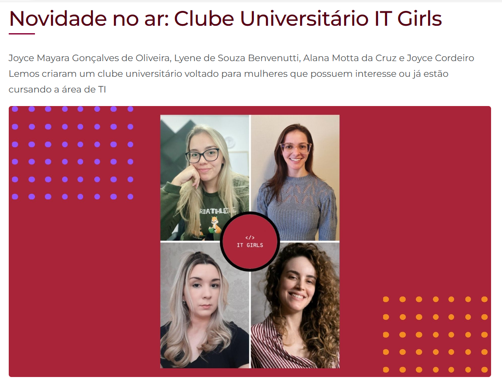

Minhas experiências na PUCPR
Clube Universitário - PUCPR - IT GIRLS
Fui co-fundadora de um clube universitário exclusivo para mulheres na área de TI. Organizamos encontros por módulos, promovendo apoio mútuo e encorajamento para fortalecer a presença feminina nesse setor predominantemente masculino.
Nosso clube pe formado por Joyce Mayara Gonçalves de Oliveira, Lyene de Souza Benvenutti, Alana Motta da Cruz (eu) e Joyce Cordeiro Lemos criamos um clube voltado para mulheres que possuem interesse ou já estão cursando a área de TI
Reconhecendo a importância da diversidade e da igualdade de gênero no campo da tecnologia, o Clube Universitário IT Girls oportuniza um espaço seguro e inclusivo para que as estudantes interessadas em programação e tecnologia possam se reunir, compartilhar conhecimentos, aprimorar suas habilidades e promover a participação feminina na área. O IT Girls é um espaço destinado a estudantes da PUCPR que se identificam como mulheres e têm interesse em tecnologia. Nosso objetivo é criar um ambiente acolhedor e de apoio mútuo, em que as participantes possam compartilhar conhecimentos, explorar novas tecnologias, colaborar em projetos e fortalecer suas habilidades. Além disso, buscamos promover a participação feminina na área de tecnologia, compartilhando experiências inspiradoras, discutindo desafios enfrentados pelas mulheres nesse campo e destacando modelos de sucesso. Se você é apaixonada por tecnologia e busca uma comunidade que valoriza a diversidade e o empoderamento feminino, junte-se a nós no IT Girls.
Discord do IT GirlsMinha experiência como Monitora
Como monitora, desempenho um papel crucial no suporte aos meus colegas de faculdade, especialmente nas disciplinas dos cursos de computação. Minhas atividades incluem a criação de resumos personalizados para ajudar os alunos a compreenderem os conteúdos, utilizando ferramentas como o Canva. Também mantenho um canal no YouTube dedicado aos estudos, com playlists específicas para cada disciplina. Estou sempre disponível para responder dúvidas relevantes sobre os conteúdos, e, quando necessário, realizo chamadas individuais com os alunos através do nosso servidor oficial no Discord da PUCPR, bem como via equipe de monitoria no Teams. Além disso, participo ativamente de reuniões com outros monitores, professores e coordenadores, fornecendo feedback sobre os conteúdos abordados e as dificuldades enfrentadas pelos alunos.
Disciplinas em que exerci ou exerço o papel de monitora.
- Matemática Aplicada à Computação
- Big Data
- Desenvolvimento Web
- Raciocínio computacional
- Banco de dados
Meu canal no Youtube
Para ver mais vídeos acesse o link abaixo
Clique aquiMinha participação na Live sobre Gestão de Tempo
Fui convidada pelas coordenadoras do curso de computação EAD da PUCPR, as professoras Joselaine Valaski e Joice Petreca, para compartilhar insights sobre gestão de tempo. Durante minha apresentação, compartilhei detalhes da minha rotina e expliquei como concilio os estudos e outros compromissos com minhas responsabilidades como mãe, esposa, estudante e profissional que também trabalha fora de casa.
Abordei as ferramentas que emprego para organização e gestão do tempo, como o Trello e um planejador semanal, além de técnicas como a Pomodoro. Destaquei a relevância do equilíbrio entre atividades e momentos de descanso, enfatizando a importância da saúde mental para desempenhar nossas tarefas com eficiência.
Gostaria de assistir a minha participação na live? Dá o play no vídeo logo abaixo!